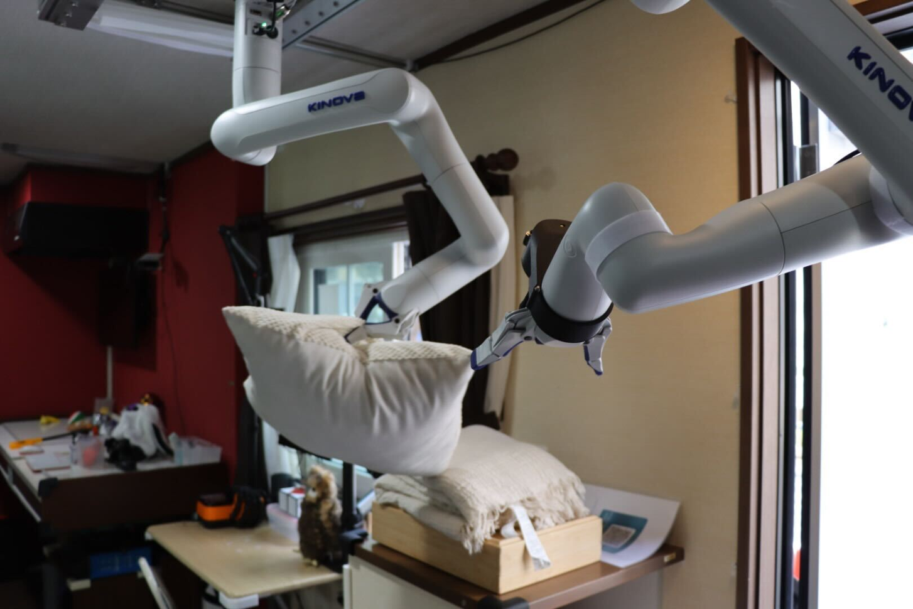
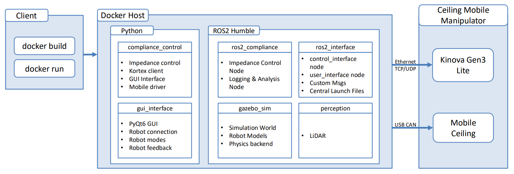

Developing an attention-based approach to Impedance gain scheduling, enabling safe and precise robotic interaction for the Kinova Gen3 Lite in complex industrial assembly tasks.
The translational component regulates force by decoupling the task-space kinetic energy matrix. The feed-forward part compensates for Kinova Gen3 Lite dynamics, while the PD-loop ensures the tracking error converges to zero at a 1kHz loop frequency.
Rotational subspace control generates torque relative to orientation error. This is critical for maintaining end-effector alignment during contact-rich tasks. My research specializes in achieving this 6-DoF regulation without external force sensors.

Optimized C++ 20 core for real-time responsiveness.
Fast Recursive Newton-Euler Algorithm for dynamics.
Distributed node architecture on Ubuntu 22.04 LTS.
Validation Platform
Kinova Gen3 Lite Mobile Ceiling Rail